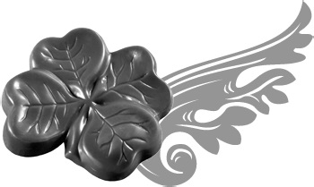
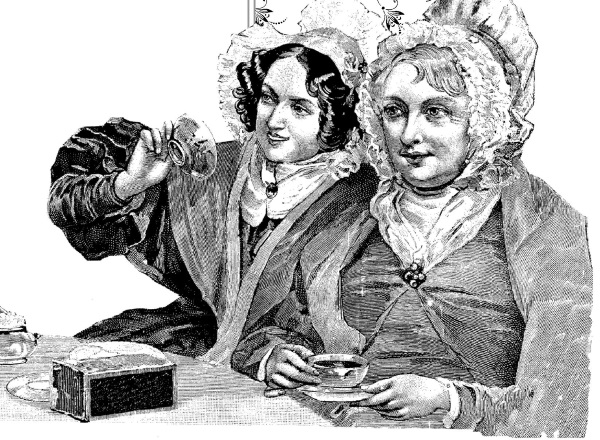

Достоинства шоколадной косметики .

В косметических целях шоколад используют в составе кремов и масок для лица и тела, а мода на подобное применение этого продукта растет с каждым годом во всем мире. Горячий шоколад используют в ванне, при массаже и обертывании; маски, крема и бальзамы втирают в тело и кожу лица. Многие спа-салоны предлагают курс шоколадной терапии для кожи, состоящий из шоколадного пилинга всего тела, шоколадной маски на лицо, шею или горячей ванны с шоколадной эмульсией. Помимо большого оздоровительного эффекта подобная процедура имеет и сильное психологическое воздействие, улучшая настроение и общее самочувствие.
По своему воздействию на организм шоколад сравним с удовольствием от секса. Какао стимулирует выработку эндорфина – гормона счастья. За это отвечает нейромодулятор под названием фенилэтиламин. Установлено, что при употреблении шоколада во время беременности появляются на свет более жизнерадостные дети. Да и сама беременная женщина, съев плитку, становится спокойнее, а ее нервная система более защищена от стрессов. За иммунитет и устойчивость к стрессовым ситуациям в шоколаде «отвечает» магний.
Индейцы Центральной Америки в 1200–1000 годах до н. э. варили «шоколадное пиво».
Кроме этого, продукты из какао-бобов полезны для профилактики простудных заболеваний – ученые из Великобритании обнаружили отличные свойства шоколада в борьбе с кашлем, какао укрепляет сосуды, чем помогает в борьбе с сердечно-сосудистыми заболеваниями. Конечно, шоколад – не лекарство и не излечивает больного человека, но его полезные свойства настолько широки, что помогут вам не заболеть, оградив от многих недугов. Тот же витамин А, в достаточном количестве находящийся в какао-бобах, способствует снижению кровяного давления и стабилизации уровня холестерина в крови, то есть обладает активным противодиабетическим действием.
Входящие в состав шоколада микроэлементы оказывают на кожу заживляющее и тонизирующее действие. Так, вещество кокохил, открытое в Мюнстерском университете, разглаживает морщины и способствует росту клеток кожи, а метилксантин и кофеин дополнительно ее тонизируют. Поэтому особенно важно использование какао для нанесения масок в областях шеи и лица. Наличие в составе какао-масла пальмитиновой, стеариновой и других кислот важно для борьбы с сухостью кожи, а витамин А помогает в регенерации кожных покровов. Гистамин, находящийся в шоколаде, активно участвует в омоложении клеток кожи, способствует заживлению ран, ожогов и последствий аллергических реакций. После проведения шоколадной терапии кожа становится бархатистой, а пигментные пятна и угревая сыпь становятся бледными и могут даже исчезнуть вовсе.
В состав какао входит кофеин, участвующий в нормализации обменных процессов всего организма и его самого большого органа – кожи. Кофеин стимулирует кровообращение и оказывает тонизирующее действие. Эти полезные свойства весьма кстати в борьбе с лишним весом и целлюлитом. Кроме того, кофеин способствует росту волос, что полезно при применении косметической продукции, предназначенной для кожи головы. Витамины В и Вучаствуют во всех биологических процессах в коже, а витамин РР укрепляет стенки сосудов. Масло какао-бобов богато витамином F, в состав которого входят несколько важных жирных кислот, например стеариновая, линолевая, пальмитиновая и другие, способствующие регенерации клеток кожи путем восстановления их мембран и удержанию влаги. Необходимую
подтяжку коже, так называемый лифтинг-эффект обеспечивают вещества из группы алколоидов – теофилин и теобромин. В обновлении рогового слоя участвуют липиды, присутствующие в какао-бобах. Они оказывают антиоксидантное действие и способствуют укреплению стенок сосудов, а группа фенолов (полифенолов), защищая клеточные мембраны от воздействия свободных радикалов, оказывает противоотечное, омолаживающее действие и повышает общий иммунитет. Шоколад обладает явно выраженными антиканцерогенными свойствами, что делает его незаменимым в профилактике онкологических заболеваний и укреплении иммунной системы человека.
Содержащееся в шоколаде вещество теобромин является опасным для домашних животных, особенно собак. Съев стограммовую плитку этого лакомства, небольшая собака может погибнуть от отравления.

Кроме пользы для кожи, шоколад благоприятно действует и на другие органы человеческого организма. Анандамид благотворно влияет на сердечную мышцу и помогает в борьбе с депрессией. Эпикатехин на 10 % снижает риск заболеть инсультом, инфарктом, некоторыми видами рака и диабетом. Это вещество не просто продлевает жизнь, но и омолаживает весь организм: улучшается циркуляция крови и эластичность кровеносных сосудов. Ученые из известнейшего американского Корнельско-го университета обнаружили, что в шоколаде эпикатехина и его эквивалентов в три раза больше, чем в красном вине или зеленом чае. Шоколад не только сам содержит серотонин, но и способствует его биосинтезу в организме человека, что сказывается на самочувствии и улучшает настроение. После ряда исследований в разных научных центрах США, Японии и некоторых других стран ученые выяснили, что какао содержит самый высокий уровень антиоксидантов, весьма полезных нашему организму. Например, в Японии установили, что крысы, употреблявшие шоколад, вскоре лишались своих лишних жировых запасов в области живота, а причиной этого была особенность какао выключать в ДНК те гены, которые отвечают за синтез жира в печени, жировые транспортные молекулы и сами жировые клетки. Удивительно, но какао само участвует в работе системы регуляции жировых отложений в организме. Это открытие стало важным в процессе включения шоколада в разряд диетических продуктов, способствующих борьбе с лишним жиром и сахаром в человеческом организме, а не наоборот, как считалось долгое время. Да, как это ни парадоксально, но плитка темного шоколада борется в нашем организме с нашим же жиром. Конечно, наибольшее число полезных веществ находится в малообработанных бобах шоколадного дерева, но будем реалистами – наиболее доступный для большинства способ получить полезные свойства плодов этого растения состоит в возможности купить в ближайшем магазине плитку темного шоколада.
Но если вы хотите усилить действие полезных веществ какао-бобов, употребляйте какао тертое или какао-масло, а еще лучше купите какао-бобы, которые вы сами сможете перемолоть, получив продукт с самым высоким уровнем антиоксидантов полифенолов. Можно перекусывать необработанными дроблеными какао-бобами, ведь содержание полезных жиров в них превышает 50 %, тогда как в готовом какао-масле в пять раз меньше! И не нужно просто грызть горькие какао-бобы – сделайте их составной частью любого продукта: от коктейля до кондитерских изделий. Получите не только мощный заряд антиоксидантов, но и превосходный шоколадный вкус.
В 2010 году ученые из одной голландской медицинской компании пришли к интересному открытию. Они установили, что запах шоколада с 85 % содержанием какао подавлял у женщин с нормальным весом гормон грелин, отвечающий за чувство голода. Что и говорить, если даже запах шоколада уменьшает чувство голода, какой же эффект дает тогда употребление этого продукта!
Ранее было установлено, что употребление 100 граммов темного шоколада в день в течение полумесяца значительно улучшало состояние больных гипертонией. Кровяное давление снижалось, а уровень холестерина стабилизировался на нормальной отметке. Этот эксперимент касался больных сахарным диабетом и был призван показать эффективность шоколада и составляющих его антиоксидантов в борьбе с опасным и распространенным недугом. Вот как много заложила природа в какао-бобы, и как важно использовать это на благо собственного организма.
Исследователи американского Гарвардского университета долгое время занимались изучением воздействия продуктов из какао на кровеносную систему и установили, что шоколад эффективно помогает в борьбе с инсультами. Ученые обследовали 4369 женщин во Франции среднего возраста, здоровых и с нормальным весом. Те из них, что съедали по нескольку частей (10 граммов) горького шоколада в день, на 52 % реже подвергались возникновению инсульта, чем те, кто ел шоколад лишь изредка.
Вот так обстоят дела с полезным действием шоколада на наш организм. Но есть и одно важное замечание.
Шоколад привез в Европу Эрнандо Кортес, путешественник. Но поначалу это лакомство не только не оценили, но и даже прозвали «дьявольским зельем». А дамы из высшего света панически боялись, что из-за употребления шоколада, может родится чернокожий ребенок.

При выборе продуктов из шоколада и шоколадной косметики следует помнить одно важное условие – продукты какао-бобов могут вызывать аллергию, поэтому до начала использования шоколада, как внутрь, так и наружу, рекомендуется выяснить наличие аллергической реакции на этот продукт. Для этого пройдите простой тест: небольшое количество средства, в состав которого входит шоколад, нанесите на сгиб локтя и через два дня посмотрите на результат. К любой красноте или раздражению следует отнестись серьезно и посетить врача-аллерголога. Тот же совет мы даем и беременным женщинам, для которых лишняя консультация специалиста никогда не помешает.
Итак, в состав какао-бобов входит огромное число биохимических соединений, которые можно классифицировать следующим образом:
– жиры, составляющие примерно 54 % состава;
– белков в какао находится 11,5 %;
– углеводы, в числе которых сахароза, крахмал и пектины, составляют до 8 %;
– свободные аминокислоты в количестве около 12 %;
– минеральные вещества (кальций, калий, железо, магний и другие) до 5 %;
– витамины (А, В, В, Е, РР и другие);
– фенолы, в том числе флавоноиды;
– терпеноиды;
– пуриновые алкалоиды (теобромин);
– кофеин в количестве 0,2 %;
– фенилэтиламин.
Таков обобщенный состав обычного боба дерева какао, чьи полезные свойства успешно применяются в косметологии. В самом начале книги мы уже обращались к составу какао-бобов, но в более подробном виде.
А основными показателями питательности какао являются следующие (из расчета на 100 граммов сухого продукта):
– калорийность – 37 килокалорий;
– белки – 24,2 грамма;
– жиры – 17,5 грамма;
– углеводы – 31,9 грамма.
Как мы помним, при переработке бобов получают три продукта: какао тертое, какао-масло и какао-порошок. Все они используются в пищевой промышленности, входя с состав более сложного конечного продукта – шоколада. Конечно, для использования в косметологических целях и в составе оздоровительной диеты лучше всего покупать чистое какао-масло и сами бобы, но и в составе шоколада они несут большую пользу.
Какао-масло уже давно применяют в медицине. При лечении простудных заболеваний оно является противокашлевым средством и обеспечивает разжижение мокроты и усиление отхаркивающего эффекта. В лечении таких болезней, как бронхит, пневмония, грипп, ОРВИ и ангина, смело используйте чудодейственное масло. Его можно принимать внутрь, запивая горячим молоком. Кроме того, какао-маслом рекомендуется смазывать воспаленное горло, а в период вирусных инфекций наносить на слизистую носового прохода в качестве профилактической меры. Оно облегчает состояние больного и в следующих случаях: при холецистите, воспалении и расстройстве кишечника, болезни желудка и сердца, при повышенном уровне холестерина. Особенно важно употребление какао-масла для стабилизации уровня холестерина в крови, как серьезное препятствие в развитии атеросклероза и варикозного расширения вен. Хорошо лечить какао-маслом ожоги, оно облегчает боль и смягчает пораженные участки кожи, участвуя в естественном процессе регенерации.
В шоколаде содержится вещество фенамин, создающее ощущение влюбленности. Ешьте шоколад, и «бабочки в животе» вас не покинут!

Натуральные вещества, содержащиеся в какао-бобах, помогают организму вырабатывать нейротрансмиттеры (химические вещества мозга) – серотонин, триптофан и допамин, влияющие на общее настроение и энергию. При низком уровне выработки указанных веществ наступает депрессивное состояние, способствующее возникновению различных неврозов.
При использовании какао-масла следует обратить внимание на некоторые ограничения. И хотя противопоказаний к применению этого уникального продукта не существует, необходимо знать ситуации, требующие внимания:
– аллергическая реакция;
– серьезное нарушение обмена веществ;
– возраст до трех лет.
В таких случаях всегда полезно проконсультироваться с врачом соответствующей специализации.
Для удобства выделим основные пункты, подчеркивающие полезность какао и шоколада для здоровья и внешности человека.
• Какао благоприятно воздействует на кожу человека, являясь превосходным природным косметическим средством.
• Какао благотворно влияет на волосы, поддерживая их рост и здоровое состояние.
• Какао активно участвует в регенерации кожного покрова и лечит многие кожные заболевания и ожоги.
• Какао полезно для питания и имеет мало ограничений к употреблению.
• Какао входит в число диетических продуктов, показанных к употреблению при лишнем весе, а также вегетарианцам.
• Какао важно для питания спортсменов и занимающихся фитнесом.
• Какао является действенным средством для профилактики сердечно-сосудистых заболеваний. Употребление шоколада в течение пяти лет (40 граммов в день) улучшает работу сердца.
• Какао улучшает состояние сосудов и предотвращает такие болезни, как варикозное расширение вен, атеросклероз и инсульт.
• Какао стабилизирует уровень холестерина в крови.
• Какао, воздействуя на сосуды, улучшает состояние больного сахарным диабетом. Природные компоненты какао нормализуют обменные процессы, связанные с уровнем сахара в крови.
• Какао богато активными антиоксидантами и является профилактическим средством против онкологических заболеваний.
• Какао богато магнием, цинком, хромом, йодом и другими минералами и позволяет восполнить их недостаток в организме человека.
• Какао благоприятно воздействует на сексуальную жизнь как мужчин, так и женщин.
• Какао поможет всем, кто курит или находится в условиях вредных производств или неблагоприятной экологической обстановке.
• Какао лечит стресс.
• Какао борется с депрессией.
• Какао улучшает мыслительные процессы, работоспособность и общее самочувствие.
Этот список можно, конечно, продолжить, но ограничимся перечисленными пунктами, ведь и так видно, насколько обширна польза плодов шоколадного дерева и как мало еще мы знаем об этом. Современная медицинская наука постигает механизмы многих недугов и ищет оптимальные способы не только в лечении тех или иных болезней, но и в действенной их профилактике. То же самое касается и нашей внешности. Мы хотим оставаться молодыми, но как эффективно сохранить свою внешность и сделать ее более привлекательной – трудная задача. Однако оказывается, что рядом с нами существует прекрасный борец с болезнями и эликсир молодости. Шоколад и какао – хорошие средства в решении проблем подобного рода, хотя способы их применения и их польза сейчас только чуть приоткрылась нам, долгое время ценившими лишь отменные вкусовые качества их продуктов.
Многие считают, что шоколад вреден для зубов. Это миф! Исследования подтверждают, что какао и шоколад обладают антибактерицидными свойствами, препятствующими образованию зубного налета, и поэтому может служить профилактикой кариеса.


Для индейцев Южной Америки шоколад был божественным напитком, даром богов. Задумайтесь – почему? Может быть, потому, что сила, скрытая в какао-бобах, настолько универсальна, огромна и загадочна, словно неземного происхождения, – подарок высших существ, создавших и само шоколадное дерево. В индейских племенах какао не просто лечило и продлевало жизнь, оно было объектом поклонения. Познавая чудодейственные свойства шоколада, мы шире и глубже используем его уникальные достоинства.
